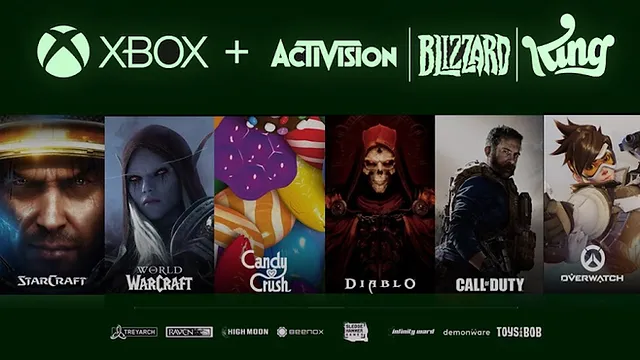
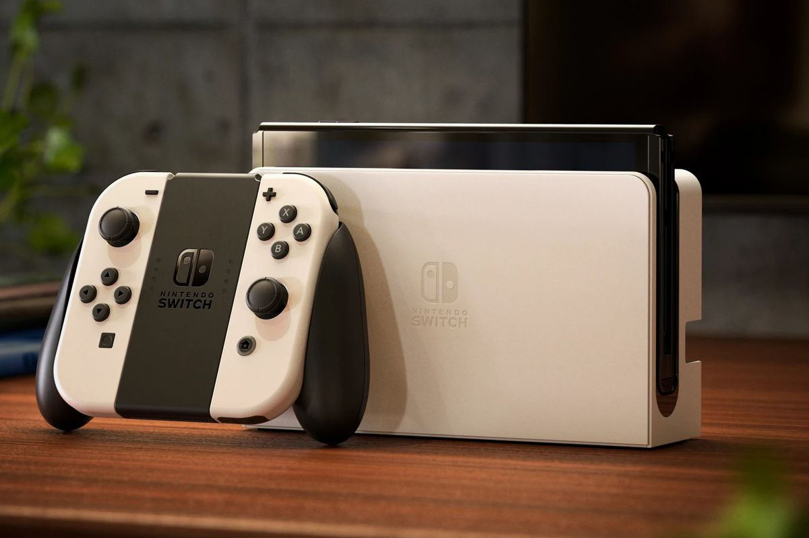

Blogpost 1: Microsoft's acquisition of Activision Blizzard
 Fans of the video game industry have long criticized Microsoft and Xbox for their lack first-party games that are exclusive to their platform, unlike their competitors, Sony and Nintendo. Following their $7.5 billion dollar Bethesda Softworks acquistion back in 2021, which comes with franchises such as Elder Scrolls, Doom, Fallout, and the recent Starfield, Microsoft now hosts a variety of titles that hopefully, in the future, allows them adequately comepete with the remainder of the big three in terms of exclusives.
posted on 5th, October 2023 by Jalique Gordon
Blogpost 2: The sunset of Nintendo's 8th generation console
 To date, the Nintendo Switch has sold over 125 million copies, making it the 3rd best selling video game console of all time, behind only Sony's Playstation 2 and Nintendo's own DS family of systems, at 1st and 2nd respectively. The system's ability to act as both a home console and a portable machine has found widespread appeal, and despite the system's lack of raw power compared to its competitors, showing especially in some later 3rd party ports, its positives outweigh the negatives. It's been 6 years of the system's time on the market, and Nintendo's own recent games showcase - and lack of such thereof indicate that development focus has shifted to their next generation console. With that, surely marking the end of a successful generation for the big N.
posted on 5th, October 2023 by Jalique Gordon